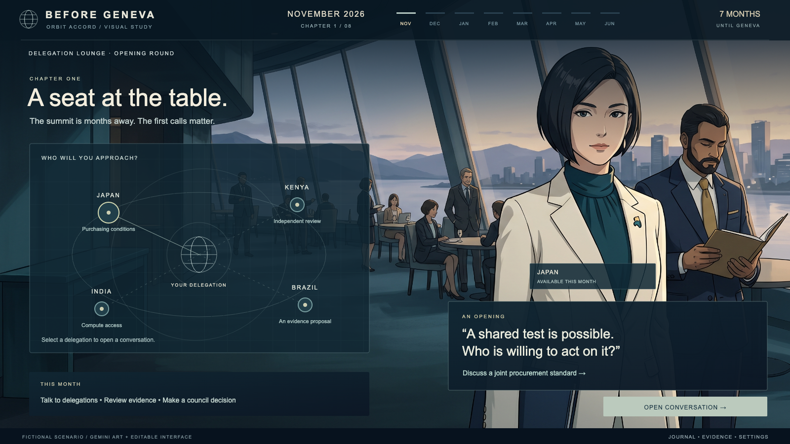
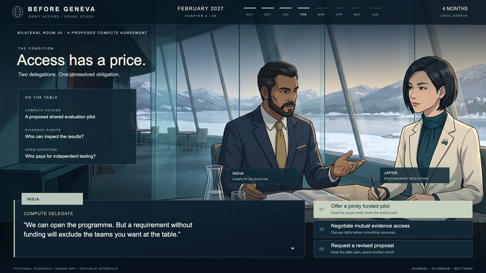
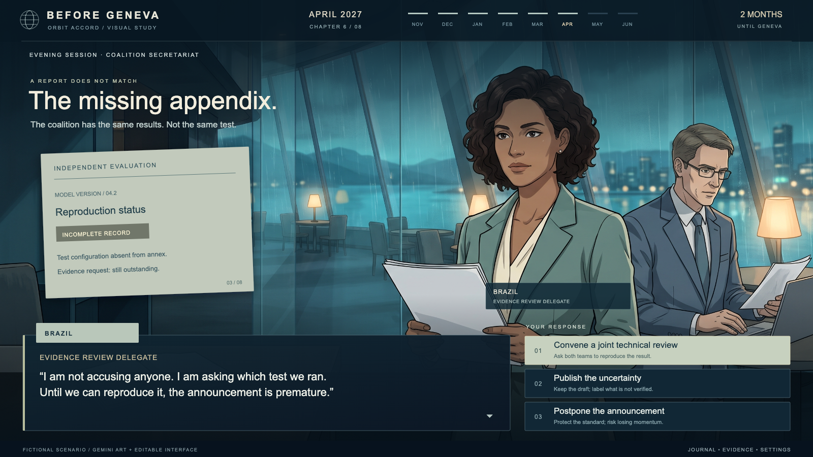
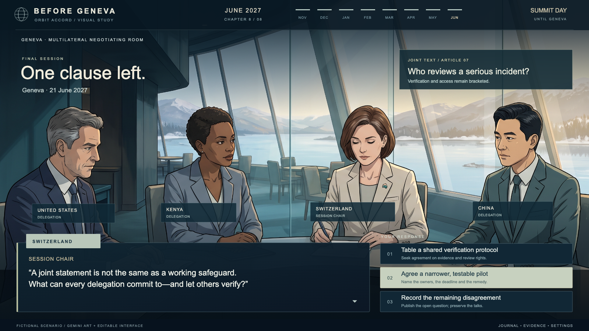

Before Geneva.
A diplomatic drama about trust, evidence and the cost of agreement. New conversations and decisions open each month, from the first approaches in November to the negotiating table in June.
Four still-image concepts. Fictional adult delegates, professional relationships and political intrigue. The artwork was generated in Gemini; every timeline, dialogue box and choice is a separate editable layer.

A seat at the table
The orbital navigation becomes a diplomatic contact map. Pick a delegation, examine its proposal, then make your monthly council decision.
Download screenOriginal artworkFull-size interface
Access has a price
Who funds independent testing, and who can inspect the evidence? Make an offer, renegotiate or take more time. The same characters continue from the first scene.
Download screenOriginal artworkFull-size interface
The missing appendix
Conflicting evidence and pressure to announce create the intrigue. The player chooses how to resolve uncertainty without casting a country as the villain.
Download screenOriginal artworkFull-size interface
One clause left
The culmination is a testable commitment, a narrower pilot or an honest record of disagreement. Earlier decisions determine what is still possible.
Download screenOriginal artworkFull-size interfaceArt direction: cinematic cel shading, architectural backgrounds, changing seasonal light and a quiet teal-and-ivory interface. These are concept stills, not playable screens or government statements. The existing game’s monthly progression, conversations, council decisions and Geneva endpoint provide the foundation. Generation prompts · Reusable image tools